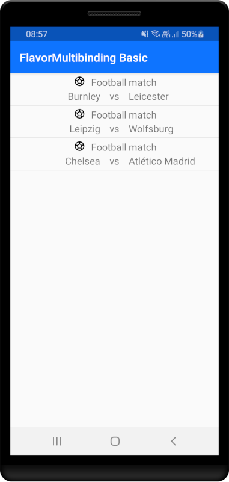
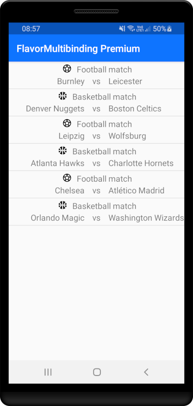
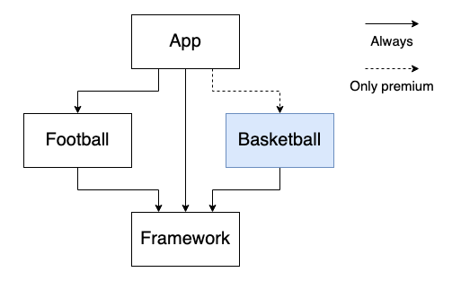
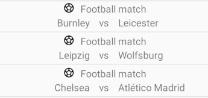
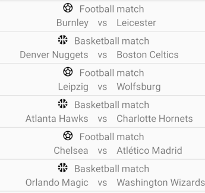

Introduction
Adding flavor dependent features on a shared screen can be troublesome. The problem gets even worse when you don't want to couple app flavors to features they don't use. In this article I'll show you how we do in FootballCo using Dagger 2 Multibinding, AdapterDelegates and some abstractions.
This example will focus on injecting feature specific RecyclerView items and a concept of "customOrDefault" that we use in our codebase. Multibindings however have a lot more uses than shown here. If you know of other use cases please feel free to share them in the comments below.
The apps
There will be two app flavors: a basic and a premium one.


I tried to keep the app simple while still tackling the Android flavor coupling problem.
Gradle modules

The app module
Contains the Activity, RecyclerView Adapter and most importantly it contains the entry point for the dagger modules.
Additionally, the premium package contains an implementation which is used to override the default app implementation using the customOrDefault concept (which will be explained later).
The gradle dependencies for the app module are as follows:
implementation project(":framework")
implementation project(":dependency:football")
premiumImplementation project(":dependency:bastketball")The Football and Basketball modules
Contain:
- their corresponding match data structure
- an AdapterDelegate which are used for extending the capabilities of the RecyclerView Adapter (shown later)
- a MatchProvider which just returns a list of matches either Football or Basketball depending on the module.
To keep the example simple the modules implementations are mirrored with slight changes. But multibindings can be used in much more complicated situations where the flavor features are much different.
The Framework module
This module includes classes which are not implementation details but rather the things that are used by multiple modules, for example:
- Interfaces and other abstractions
- Data structures
- Utilities
Flavor based RecyclerView extension without coupling modules
In the first part of this section I will be showing how the AdapterDelegates library works. If that does not interest you please read the summary below and navigate to the second part
Summary:
AdapterDelegates are mini RecyclerView Adapters which can be added to the Main Adapter in order to extend the supported types.
In the first solution the Main Adapter is extended by injecting a concrete class. This means that changing the supported types of the Main Adapter requires changes in the constructor. Multibinding solves the problem by providing an abstraction in the form of a set. Thanks to this set, the constructor requires no changes when a type is added/removed/changed.
How AdapterDelegates work
"Favor composition over inheritance" for RecyclerView Adapters
AdapterDelegates could be thought of like mini RecyclerView Adapters which can be plugged in into the main Adapter in order to support more item types. This means that adding an additional type to a list only requires an additional AdapterDelegate without needing to add extra logic to the main Adapter.
The AdapterDelegate for football matches in this project:
The data structure:
data class FootballMatch(
val homeTeamName: String,
val awayTeamName: String,
) : DisplayableItemDisplayableItem is just a marker interface to indicate that this data structure is used as a RecyclerView Adapter item
interface DisplayableItemTaking all of this into account, an AdapterDelegate for a football match looks like this:
internal class FootballMatchAdapterDelegate @Inject constructor() :
AdapterDelegate<List<DisplayableItem>>() {
override fun isForViewType(items: List<DisplayableItem>, position: Int): Boolean =
items[position] is FootballMatch
override fun onCreateViewHolder(parent: ViewGroup): RecyclerView.ViewHolder =
FootballMatchViewHolder(
parent.inflateLayout(R.layout.item_football_match)
)
override fun onBindViewHolder(
items: List<DisplayableItem>,
position: Int,
holder: RecyclerView.ViewHolder,
payloads: MutableList<Any>
) {
val match = items[position] as FootballMatch
(holder as FootballMatchViewHolder).bind(match)
}
}The FootballMatchAdapterDelegate will be responsible for showing any FootballMatch that is present in the DisplayableItem list. The ViewHolder implemented in the same way as any other ViewHolder, so I won't show it. The basketball implementation is just a mirror to this implementation is also omitted.
The main RecyclerView Adapter for the FootballMatchAdapterDelegate:
class MatchListAdapter(
footballMatchAdapterDelegate: FootballMatchAdapterDelegate
) : RecyclerView.Adapter<RecyclerView.ViewHolder>() {
private val delegatesManager = AdapterDelegatesManager<List<DisplayableItem>>()
private var items = listOf<DisplayableItem>()
init {
delegatesManager.addDelegate(footballMatchAdapterDelegate)
}
override fun getItemViewType(position: Int): Int {
return delegatesManager.getItemViewType(items, position)
}
override fun onCreateViewHolder(
parent: ViewGroup,
viewType: Int
): RecyclerView.ViewHolder =
delegatesManager.onCreateViewHolder(parent, viewType)
override fun onBindViewHolder(holder: RecyclerView.ViewHolder, position: Int) {
delegatesManager.onBindViewHolder(items, position, holder)
}
override fun getItemCount(): Int = items.count()
fun setItems(newItems: List<DisplayableItem>) {
items = newItems
}
}The main Adapter basically delegates all of its calls to the registered AdapterDelegates. If a suitable delegate is found then it will handle the item, in the case no appropriate delegate is found, a RunTimeException is thrown.
Side note: Behind the scenes I used an additional abstraction for the AdapterDelegate superclass to make injections more readable:
abstract class MatchAdapterDelegate : AdapterDelegate<List<DisplayableItem>>()Using Dagger 2 Multibinds to extend RecyclerView Adapter functionality
Extending the solution from the previous section would require adding an extra constructor parameter along with its addition to the delegatesManager property. To make matters worse, it uses the concrete AdapterDelegate implementation instead of an abstraction. This means that adding a basketball AdapterDelegate would require a dependency on the basketball module for both the basic flavor and the premium flavor, even though the basic flavor will not use it.
Injecting a common supertype (AdapterDelegate or the MatchAdapterDelegate mentioned earlier) and the help of Multibinds allows extending the main Adapter without the need to change the code inside it. The added bonus is that the basic flavor does not need a dependency on the basketball module.
The dagger module for adding the FootballMatchAdapterDelegate into the dependency graph:
@Module
abstract class FootballModule {
@Binds
@IntoSet
internal abstract fun bindFootballMatchAdapterDelegate(
footballMatchAdapterDelegate: FootballMatchAdapterDelegate
): MatchAdapterDelegate
}Thanks to the @IntoSet annotation the AdapterDelegate is not bound as a single class in the dagger graph, but as Set<MatchAdapterDelegate>. If that sounds confusing I encourage you to read more about dagger multibindings in the official documentation.
In order for the Set to work correctly, a @Multibinds declaration needs to exist in a module that both flavors use:
@Multibinds
abstract fun multibindMatchAdapterDelegate(): Set<MatchAdapterDelegate>And now instead of injecting a concrete implementation into the main Adapter, the multibound Set can be injected instead:
class MatchListAdapter(
matchAdapterDelegates: Set<@JvmSuppressWildcards MatchAdapterDelegate>
) : RecyclerView.Adapter<RecyclerView.ViewHolder>() {
//...
init {
matchAdapterDelegates.forEach { delegate ->
delegatesManager.addDelegate(delegate)
}
}
//...
}Adding another RecyclerView type now only requires creating an AdapterDelegate and adding it to the dagger dependency graph as a set. The @JvmSuppressWildcards is used because of the way that Kotlin defines Set. Sometimes without the annotation dagger won't recognize the generic type.
Extending the main Adapter with the basketball type, only requires a dagger declaration with an @IntoSet annotation:
@Binds
@IntoSet
internal abstract fun bindBasketballMatchAdapterDelegate(
basketballMatchAdapterDelegate: BasketballMatchAdapterDelegate
): MatchAdapterDelegateFlavor based custom implementation
In our project we commonly encounter a situation where we need to implement custom behavior in one of the flavors, but the rest should remain as is. To allow this we use a function called customOrDefault:
fun <Type> customOrDefault(
defaultImplementation: Type,
customImplementationsSet: Set<Type>
): Type {
require(customImplementationsSet.size <= 1) {
"Multiple (${customImplementationsSet.size}) custom implementations bound in $customImplementationsSet"
}
return customImplementationsSet.firstOrNull() ?: defaultImplementation
}The basic idea is that if there is one custom implementation in the set then the custom implementation is used, otherwise the default implementation is used.
Providing the default implementation
The basic flavor only provides a list of football matches

These three items come from the default (basic flavor) implementation of the MatchesProvider interface:
interface MatchesProvider {
fun get(): List<DisplayableItem>
}
class FootballMatchesProvider @Inject constructor() : MatchesProvider {
override fun get(): List<DisplayableItem> {
return listOf(
FootballMatch("Burnley", "Leicester"),
FootballMatch("Leipzig", "Wolfsburg"),
FootballMatch("Chelsea", "Atlético Madrid"),
)
}
}This MatchesProvider interface is used to provide items to the main Adapter:
@Inject
lateinit var matchesProvider: MatchesProvider
//...
adapter.setItems(matchesProvider.get())
//...The MatchesProvider interface is introduced to the dagger dependency graph in the following way:
@Provides
fun provideDefaultOrCustomMatchesProvider(
default: FootballMatchesProvider,
custom: Set<@JvmSuppressWildcards MatchesProvider>
): MatchesProvider =
customOrDefault(default, custom)
If the Set<MatchesProvider> does not exist in the dagger graph then the default FootballMatchesProvider is used. Because the basic flavor does not introduce any additional MatchesProvider it uses the default implementation.
Side note: This declaration resides in the main package of the app module, meaning that both flavors use it.
Providing a custom implementation
The basketball module provides a MatchesProvider for basketball matches:
class BasketballMatchesProvider @Inject constructor() : MatchesProvider {
override fun get(): List<DisplayableItem> {
return listOf(
BasketballMatch("Denver Nuggets", "Boston Celtics"),
BasketballMatch("Atlanta Hawks", "Charlotte Hornets"),
BasketballMatch("Orlando Magic", "Washington Wizards"),
)
}
}However binding this as a Set with @IntoSet would mean that this implementation is the custom one thus making the premium flavor only show basketball matches.
To overcome this issue an additional MatchesProvider is defined in the app module within the package of the premium flavor:
class ConcatenatedMatchesProvider @Inject constructor(
private val footballMatchesProvider: FootballMatchesProvider,
private val basketballMatchesProvider: BasketballMatchesProvider,
): MatchesProvider {
override fun get(): List<DisplayableItem> {
return footballMatchesProvider.get()
.zip(basketballMatchesProvider.get()) { a, b ->
listOf(a, b)
}.flatten()
}
}It basically merges the football and basketball matches together and returns the result. This implementation is bound in the following way:
@Binds
@IntoSet
abstract fun bindMatchesProvider(
concatenatedMatchesProvider: ConcatenatedMatchesProvider
): MatchesProvider
Because the ConcatenatedMatchesProvider implementation is bound as a set, it will be used as the custom implementation in the customOrDefault function:
@Provides
fun provideDefaultOrCustomMatchesProvider(
default: FootballMatchesProvider,
custom: Set<@JvmSuppressWildcards MatchesProvider>
): MatchesProvider =
customOrDefault(default, custom)

Summary
Dagger2 Multibindings add even more complexity to the dependency injection in Android, but they can be used to solve even more complex problems. The example project for this article is available on GitHub, I hope it can be used as learning material for using Dagger 2 Multibindings in Android apps with multiple flavors.
Some things we used Multibindings for:
- New RecyclerView types
- Additional screens (e.g. Authentication)
- Analytics
- Custom views
If you have any questions, or you want to share how you used Multibindings to solve a complex problem please write about it below.
Many thanks to Michał Olszak, Artur Poplawski and Piotr Sulej for the help on this Article.